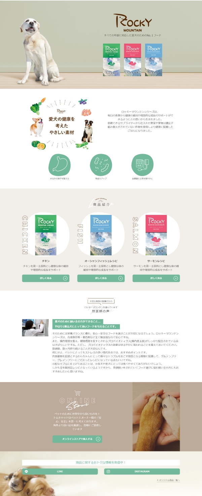
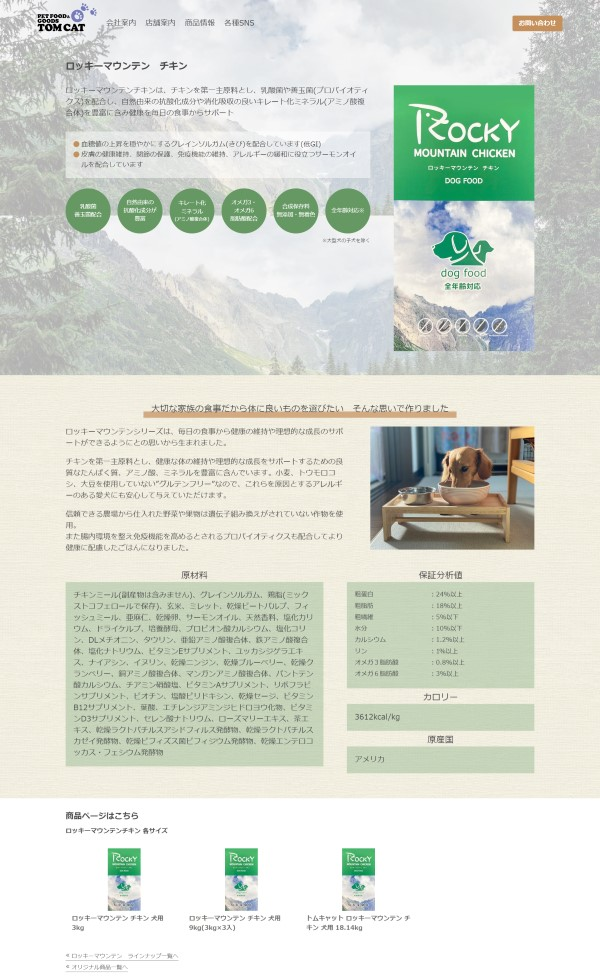

ペットフードランディングページ制作
- 
- 
公開ページ
https://tom-cat.co.jp/products/rockyLP/rocky_mountain_index.html
制作期間
3週間
担当業務
PCページデザイン、コーディング
概要
外注したスマートフォン用デザインを元にPCページのレイアウトをデザインし、コーディングを担当しました。
商品ごとの詳細ページはスマホデザイン・PCデザインともに担当しています。
https://tom-cat.co.jp/products/rockyLP/rocky_mountain_index.html
3週間
PCページデザイン、コーディング
外注したスマートフォン用デザインを元にPCページのレイアウトをデザインし、コーディングを担当しました。
商品ごとの詳細ページはスマホデザイン・PCデザインともに担当しています。